Jogos PS3
Coleção selecionada com os melhores títulos de PS3, prontos para instalar no seu console.
A maioria está em PKG, compatível com HEN e CFW, mas também há opções em pasta e ISO.
Os jogos estão dublados, legendados ou ambos. Quando não há versão em português, estão em inglês por falta de tradução.
E ainda tem jogos raros, difíceis de achar, reunidos especialmente para quem quer uma coleção diferenciada.
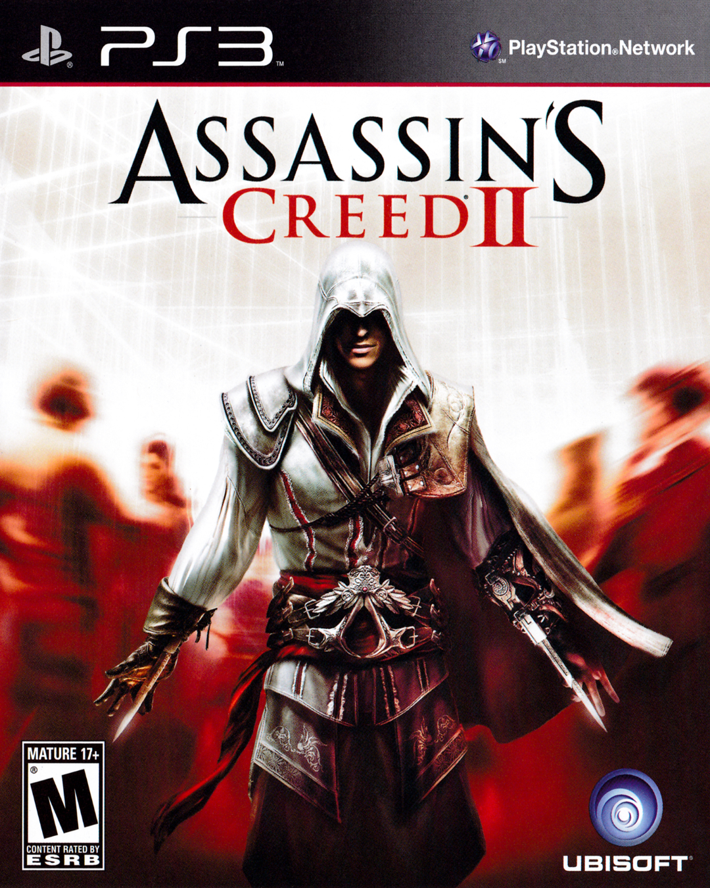
Assassin’s Creed II (PT-BR)
Versão legendada em português, dividido em 2 partes.
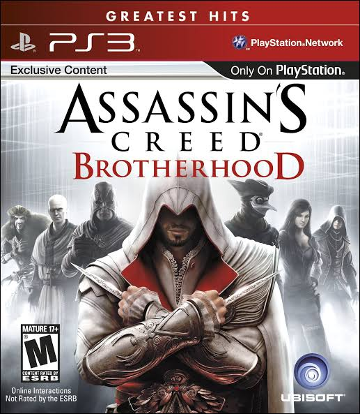
Assassin’s Creed: Brotherhood (PT-BR)
Jogo Legendado em português, dividido em 2 partes.
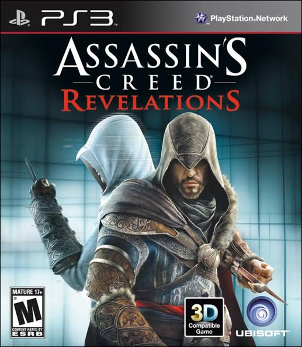
Assassin’s Creed: Revelations (PT-BR)
Jogo legendado em português, dividido em 2 partes.
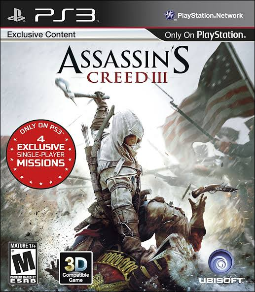
Assassin’s Creed III (PT-BR)
Arquivo da Dublagem com processo específico.
IMPORTANTE: Para jogar dublado, instale a versão USA (NPUB) do jogo.
Após instalado e testado, aplique o pacote de dublagem acima.
Quer ajuda com esse processo? Entre no nosso servidor do Discord e receba o passo a passo.
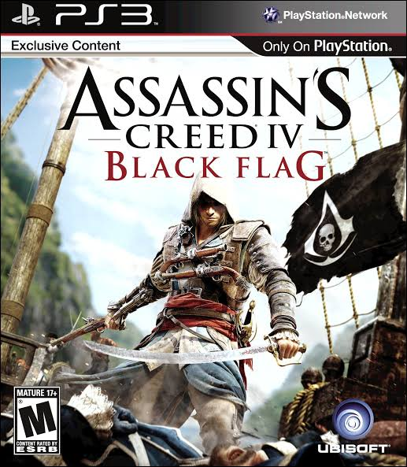
Assassin’s Creed IV: Black Flag (PT-BR)
Dublado e legendado em português, com 2 versões, pkg e pasta.
Versão PKG:
Versão PASTA:
Updates & DLCs:
Senha para extrair: pedro-psxdownloads
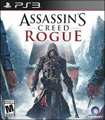
Assassin’s Creed Rogue (PT-BR)
Dublado e legendado em português, dividido em 4 partes + FIX DLC e fix áudio.
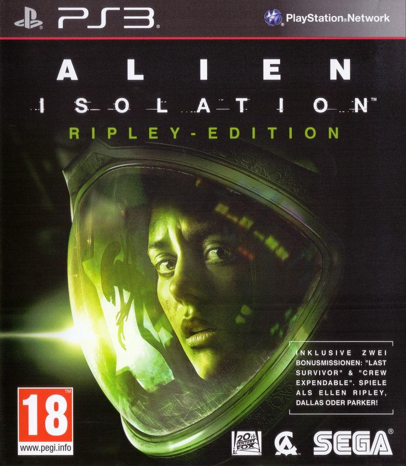
Alien: Isolation (PT-BR)
Jogo de terror e sobrevivência para PS3, baseado no universo de Alien, totalmente dublado e legendado em português.
Jogo Completo:
Alice Madness Returns (PT-BR)
Jogo completo, legendado em português, dividido em 2 partes. Inclui DLCs e tradução PT-BR.
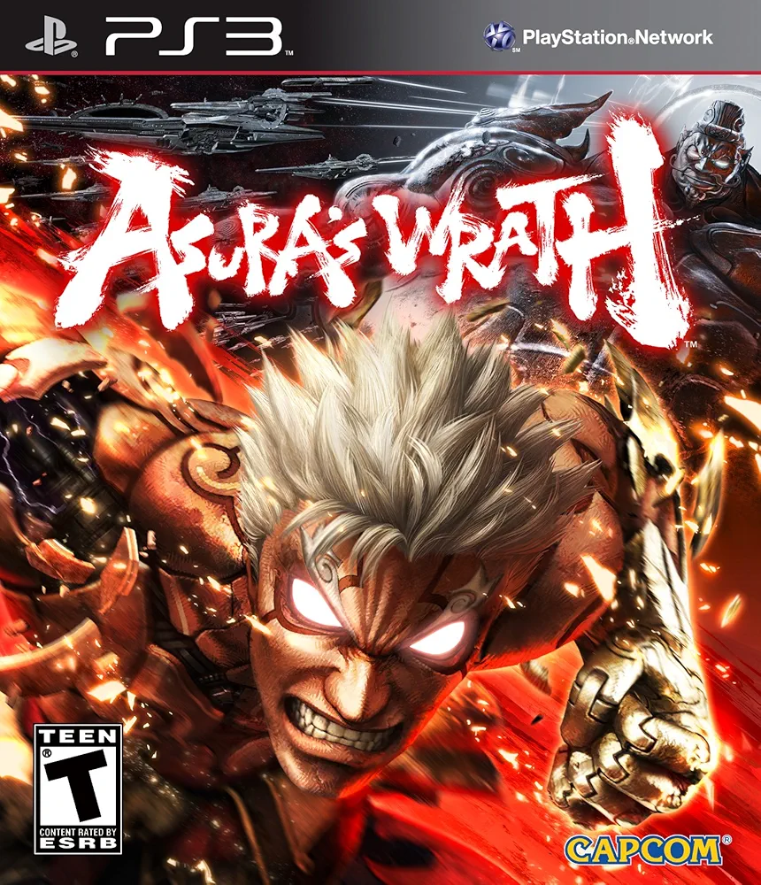
Asura's Wrath (PT-BR)
Jogo de ação cinematográfica para PS3, com tradução em português (necessário mudar idioma do sistema para espanhol).
Jogo Completo:DLCs (Opcionais):
Senha para extrair (se pedir): pedro-psxdownloads
Importante: Para que o jogo fique em português, altere o idioma do sistema do PS3 para espanhol (español). Não atualize o jogo ou a tradução será perdida.
Ordem de instalação das DLCs:
1. Update 1.02
2. Lost Episode 1
3. Lost Episode 2
4. Episode 11.5
5. Episode 15.5
6. Episodes 19-22
7. Asura's Wrath USA All DLC Pack Final Fix (BLUS30721)
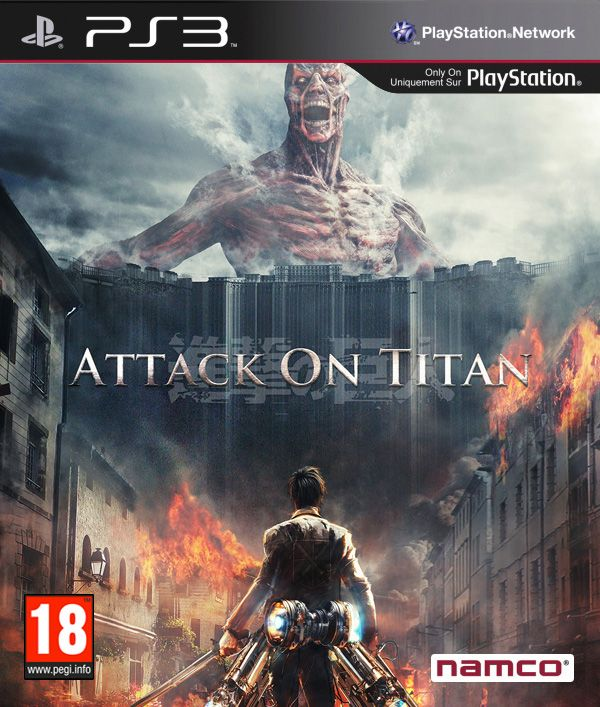
Attack On Titan (Inglês)
Jogo de ação para PS3 em inglês. Para evitar erros de inicialização, instale a RAP e o FIX se necessário.
Jogo Completo:RAP e FIX:
Importante: Se o jogo apresentar erro ao ser iniciado, basta instalar a RAP e o FIX para corrigir.
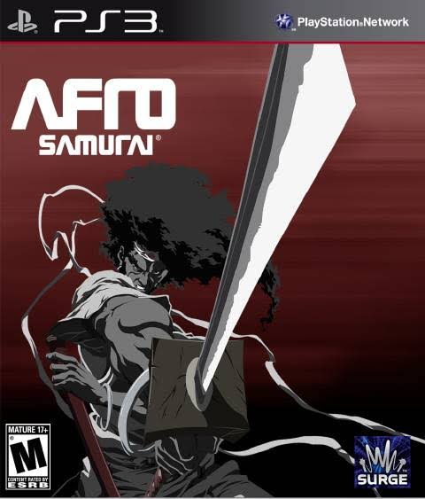
Afro Samurai (PT-BR)
Jogo de ação para PS3, totalmente em português. Para evitar erros de inicialização, instale o Patch e a Licença.
Jogo Completo:Patch e Licença:
Importante: Instale o Patch e a Licença se o jogo apresentar erro ao iniciar.
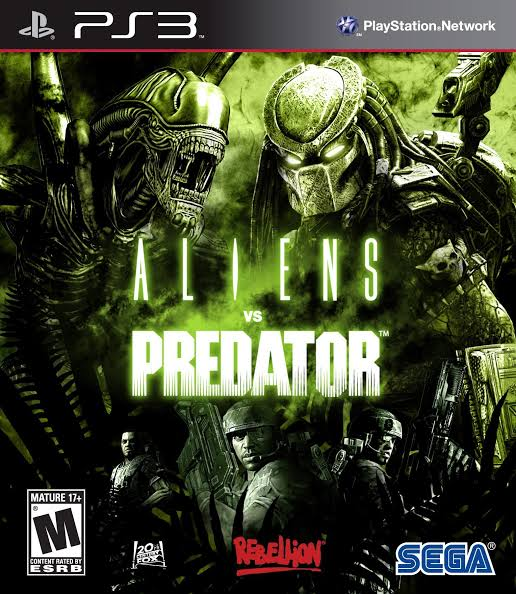
Alien Vs. Predator (PT-BR)
Jogo de ação e combate para PS3, totalmente em português. Caso apresente erro ao iniciar, instale o Patch e a Licença.
Jogo Completo:Patch e Licença:
Importante: Instale o Patch e a Licença se o jogo apresentar erro ao iniciar.
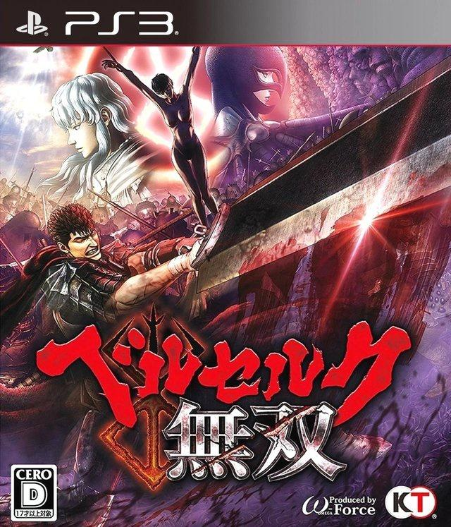
Berserk Musou (Inglês)
Jogo raro completo, Em Inglês, dividido em 8 partes.
PATCH CASO DÊ TELA PRETA (SÓ INSTALE CASO O JOGO NÃO RODE NO PS3):
SE ESSE PATCH DER TELA PRETA, BAIXE ESSE AQUI E INSTALE ESSE FIX AQUI:
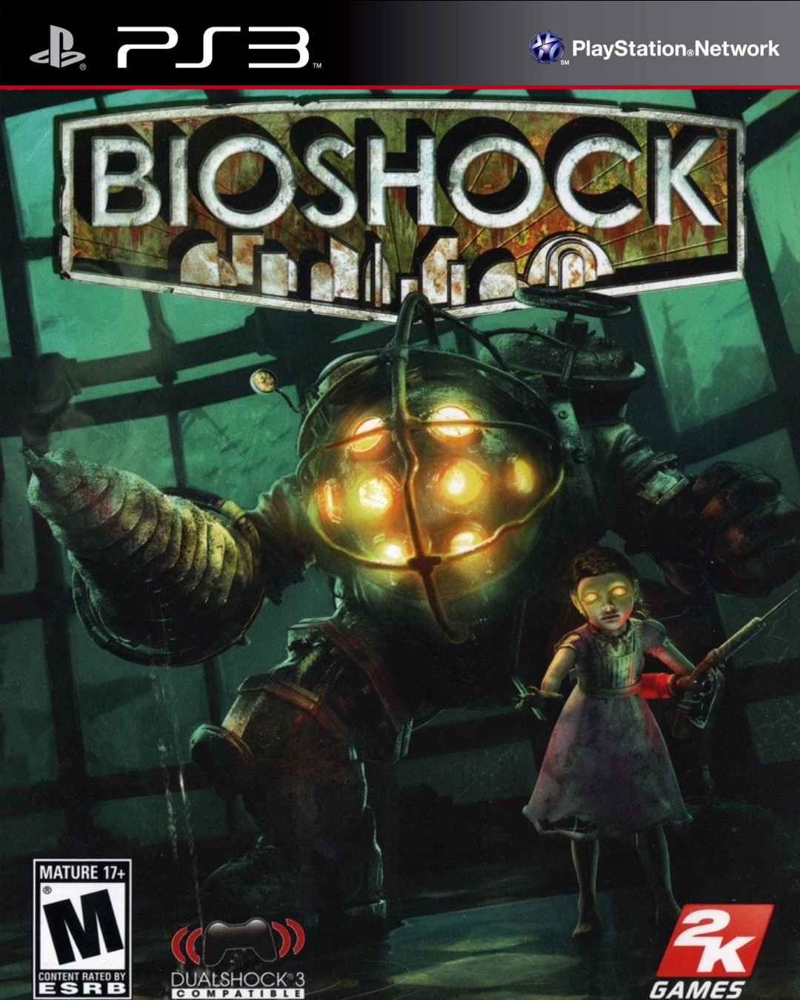
Bioshock (PT-BR)
Jogo completo legendado Em Português, dividido em 3 partes.
IMPORTANTE: Não atualize o jogo ou você vai perder a tradução!
Após instalar o jogo em PKG, inicie ele pelo Multiman ou Webman.
Ao aparecer: "Please Wait... Now Installing Bioshock", significa que os dados do jogo estão sendo instalados — então pode demorar um pouco.
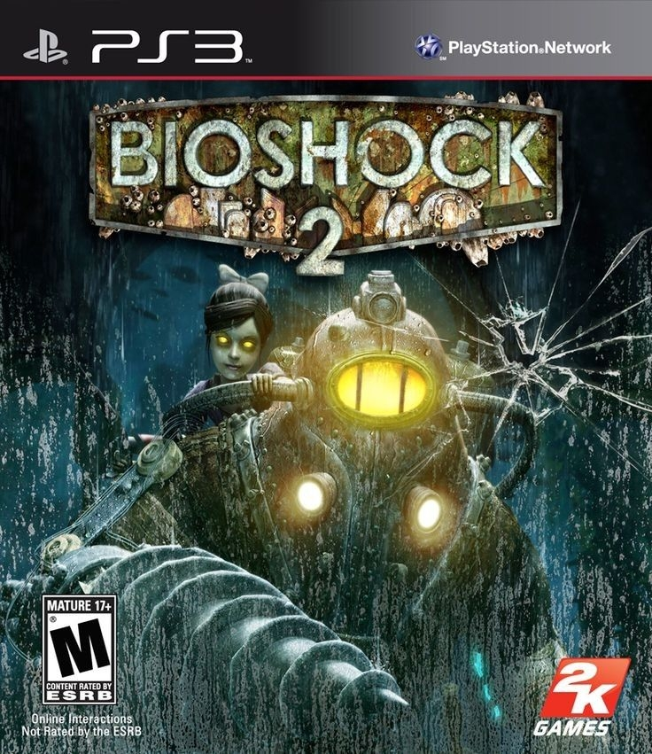
Bioshock 2 (PT-BR)
Jogo raro completo, Em Português, dividido em 3 partes.
DLCs (opcionais):
IMPORTANTE: Ao aparecer: "Please wait... Bioshock 2 is INSTALLING", significa que o jogo está instalando dados — isso pode demorar um pouco.
Não atualize o jogo, ou você perderá a tradução. (As DLCs são opcionais).
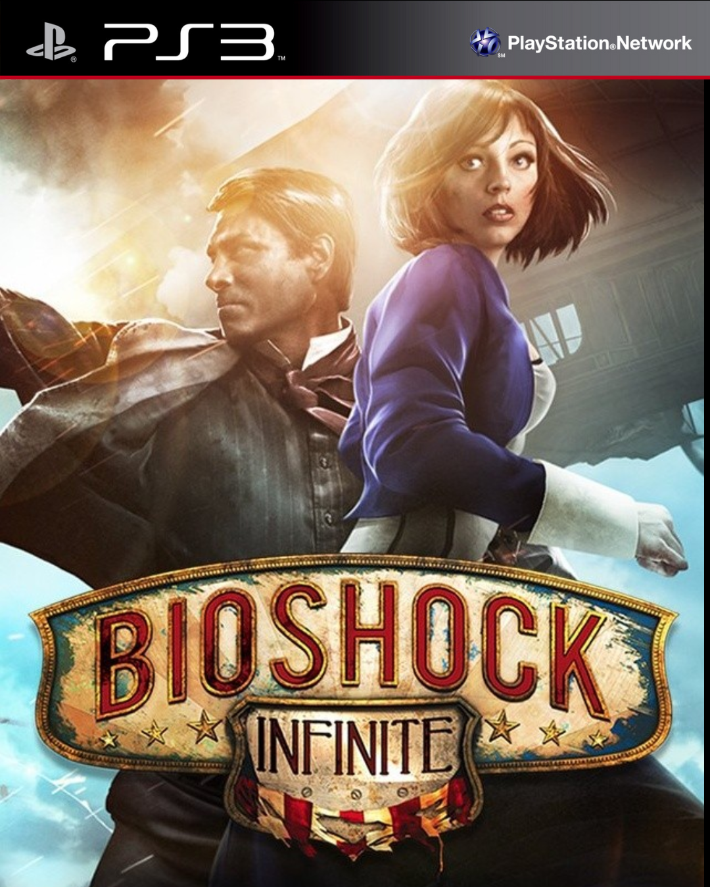
Bioshock Infinite (PT-BR)
Jogo completo, em Português, dividido em 2 partes.
IMPORTANTE: Não atualize o jogo ou você pode perder a tradução!
Ao abrir o jogo pela primeira vez, ele pode demorar um pouco pois estará instalando dados internos.
Execute o jogo normalmente após instalar os PKGs e ativar a licença.
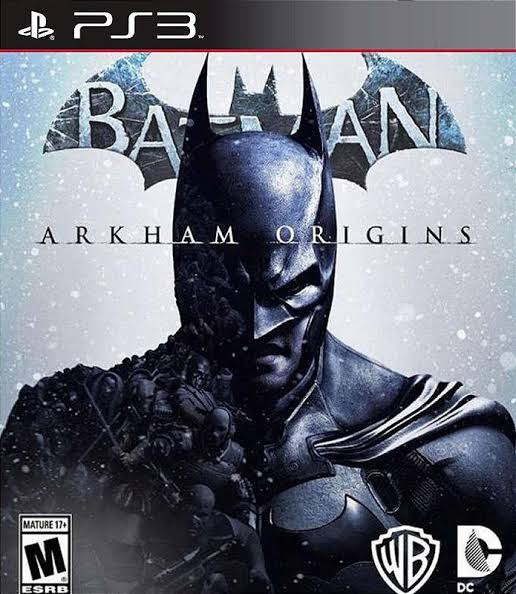
Batman Arkham Origins (PT-BR)
Dublado e legendado, completo em 4 partes. PKG feita por Pedrost.
DLCs:
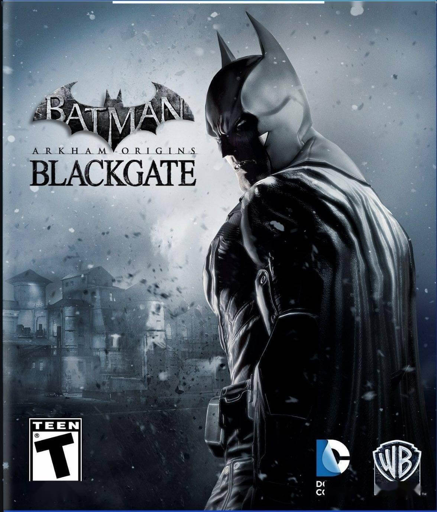
Batman Arkham Origins Blackgate Deluxe Edition (Inglês)
Versão completa em PKG.
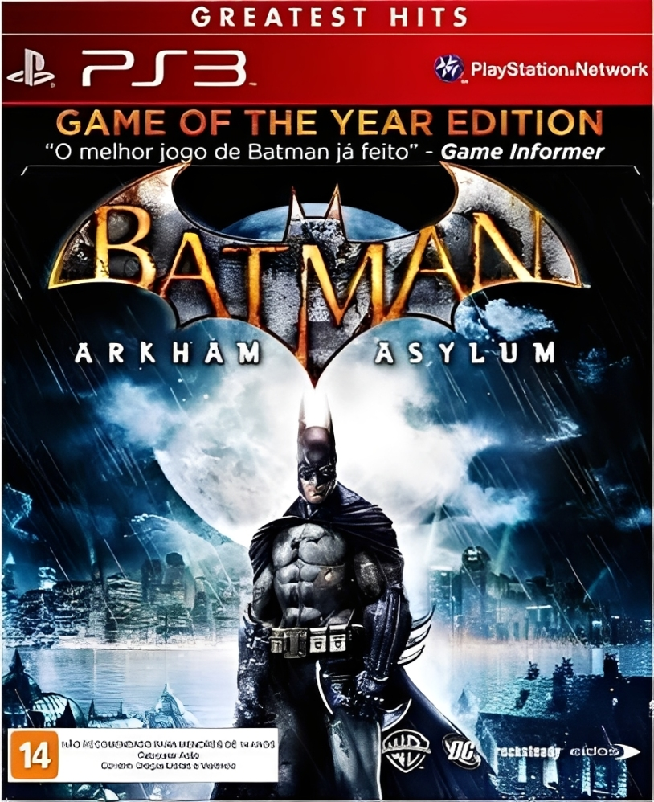
Batman Arkham Asylum GOTY (Legendado PT-BR)
Jogo legendado em português. Versão em formato PASTA. Senha para extrair: pedro-psxdownloads
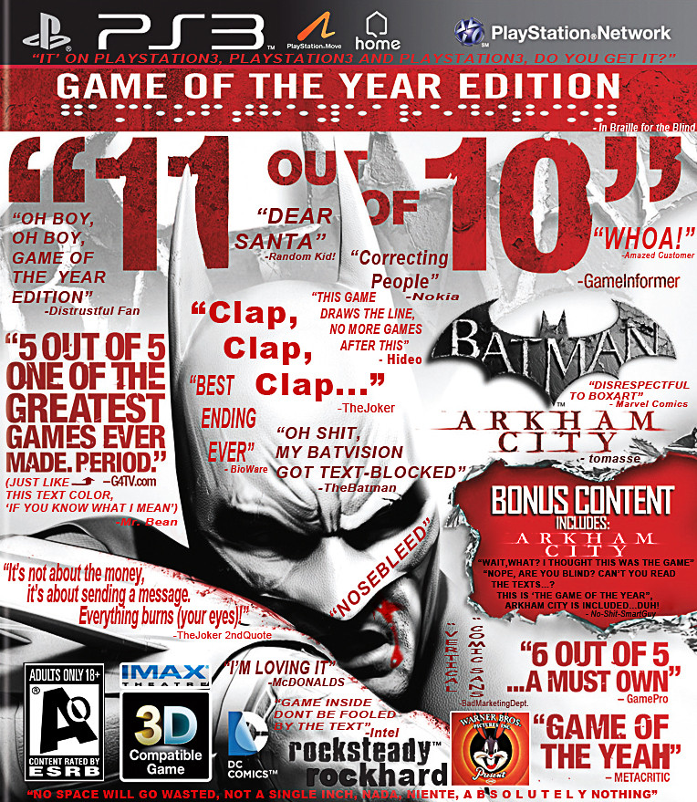
Batman Arkham City GOTY (PT-BR)
Disponível em duas versões: PKG e PASTA.
Versão PKG (ordem de instalação):
Versão PASTA:
Senha para extrair: pedro-psxdownloads
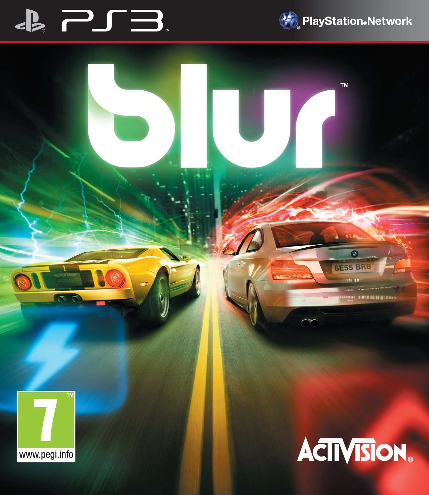
BLUR (Inglês)
Jogo raro completo, Em Inglês, dividido em 3 partes.

Blitz The League II (Inglês)
Jogo completo, Em Inglês, dividido em 5 partes.

Beyond: Two Souls (PT-BR)
Jogo completo dublado e legendado em português, dividido em 7 partes no formato PKG.
Inclui DLCs adicionais com conteúdos extras e um fix para compatibilidade em consoles com firmware 4.50+.
Parte 1
Parte 2
Parte 3
Parte 4
Parte 5
Parte 6
Parte 7
🛠️ DLCs:
Patch de DLC
DLC Experimentos Avançados
DLC Fix (4.50+)
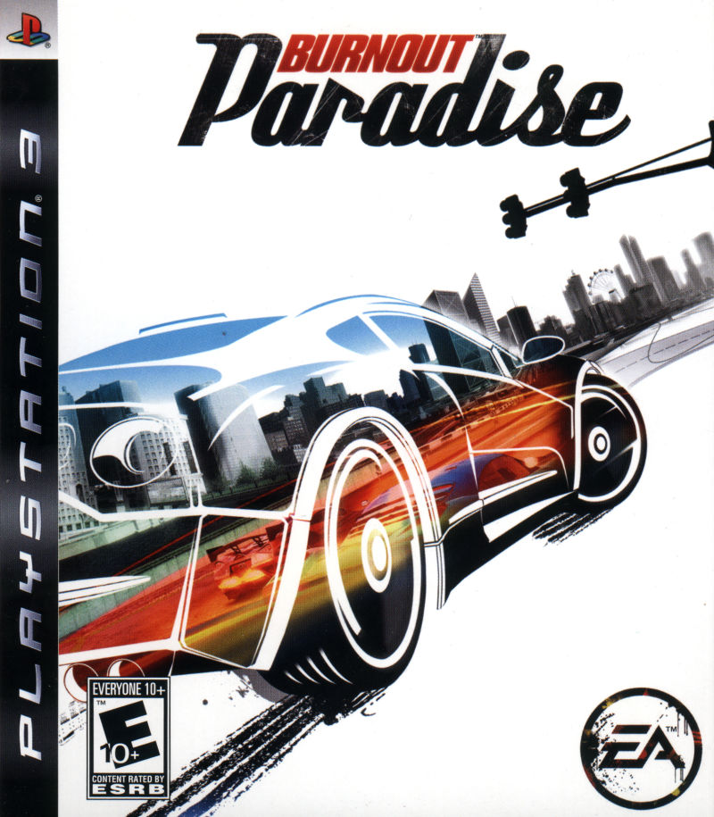
Burnout Paradise: The Ultimate Box (Inglês)
Jogo de corrida para PS3. Idioma original em inglês, sem tradução ou dublagem.
Jogo Completo: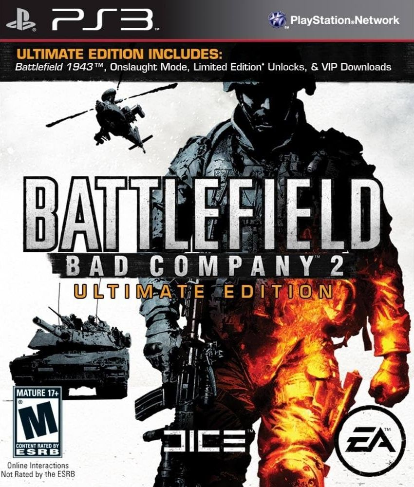
Battlefield Bad Company 2 Limited Edition (PT-BR)
Jogo de ação e guerra para PS3, totalmente em português. Inclui patch, tradução e licença para evitar erros de inicialização.
Jogo Completo:Tradução e Licença:
Importante: Instale o Patch, a Tradução e a Licença se o jogo apresentar erro ao iniciar.
Battlefield 3 (PT-BR)
Jogo de guerra para PS3, totalmente em português. Disponível em formatos PKG e Pasta. Inclui Patch, Licença e Tradução.
Formato PKG:Formato Pasta:
Senha para extrair: pedrost
Como instalar:
- PKG: Instale as 3 partes do jogo, Patch, Licença e depois a Tradução.
- Pasta: Instale a Atualização 1.09, a Tradução e inicie pelo Multiman ou atualize pela XMB do PS3.
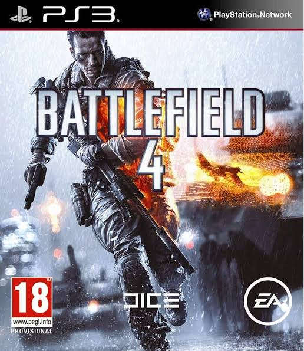
Battlefield 4 (PT-BR)
Jogo de guerra para PS3, totalmente em português. Instale as partes na ordem correta para evitar erros.
Jogo Completo:Band Hero (PT-BR)
Jogo musical para PS3, totalmente em português. Funciona plenamente com controle. Para ativar o debug, acesse o menu no jogo e em "Allow Controller" selecione "Yes".
Formato PKG:Formato Pasta:
Senha para extrair: pedrost
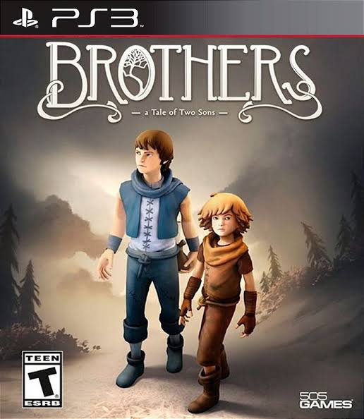
Brothers: A Tale of Two Sons (PT-BR)
Jogo de aventura para PS3, totalmente em português. Experimente a narrativa emocionante e jogabilidade única controlando dois irmãos simultaneamente.
Jogo Completo: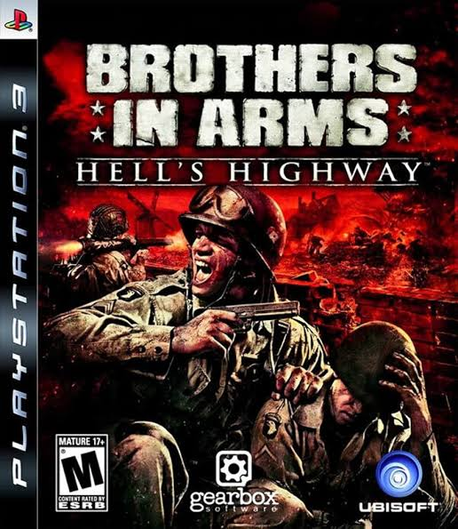
Brothers in Arms: Hell's Highway (PT-BR)
Jogo de guerra para PS3. Para jogar em português, altere o idioma do sistema do console para espanhol.
Formato Pasta: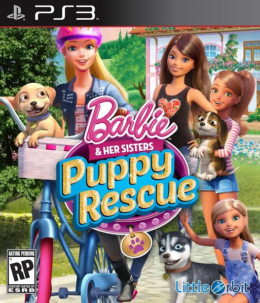
Barbie & Her Sisters: Puppy Rescue (PT-BR)
Jogo infantil para PS3, totalmente em português. Ideal para crianças, com jogabilidade simples e divertida.
Jogo Completo: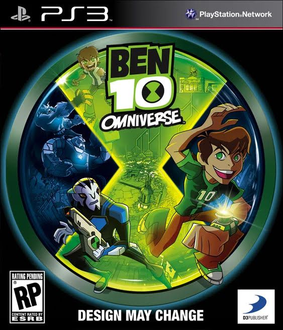
Ben 10: Omniverse (PT-BR)
Jogo de ação e aventura para PS3. Para jogar em português, altere o idioma do sistema do console para espanhol.
Jogo Completo: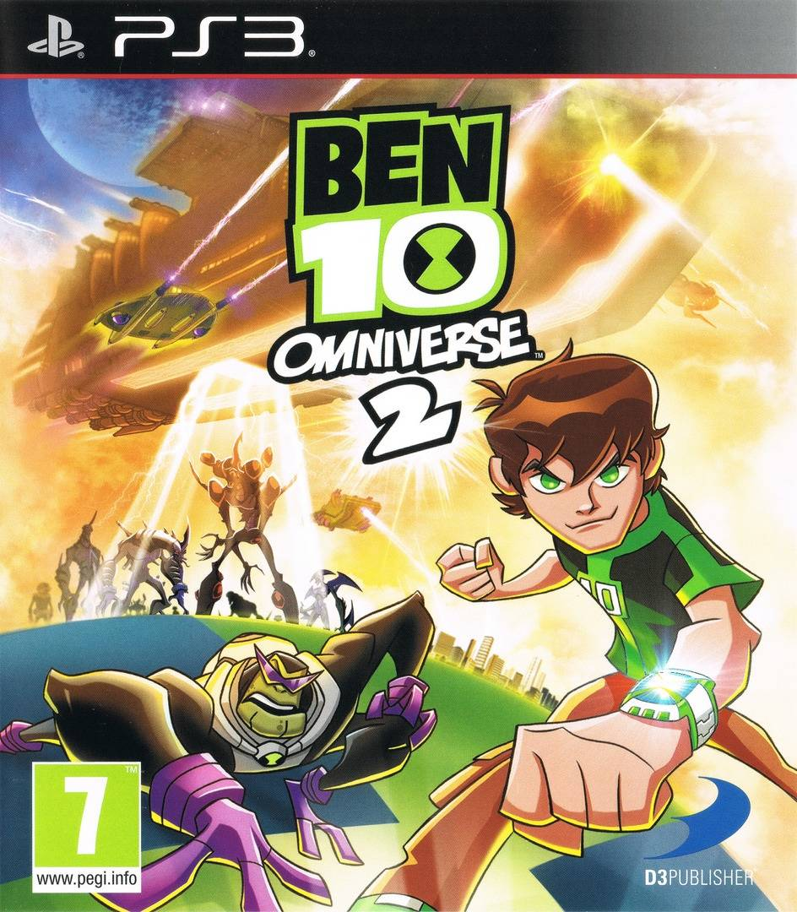
Ben 10: Omniverse 2 (PT-BR)
Jogo de ação e aventura para PS3. Para jogar em português, altere o idioma do sistema do console para espanhol.
Jogo Completo: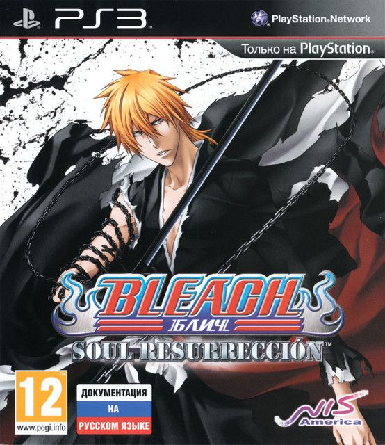
Bleach: Soul Resurrección (PT-BR)
Jogo de ação estilo hack and slash para PS3, baseado no anime Bleach. Para jogar em português, altere o idioma do sistema do console para espanhol.
Jogo Completo:Senha para extrair: Denilson-Psxdownloads.us
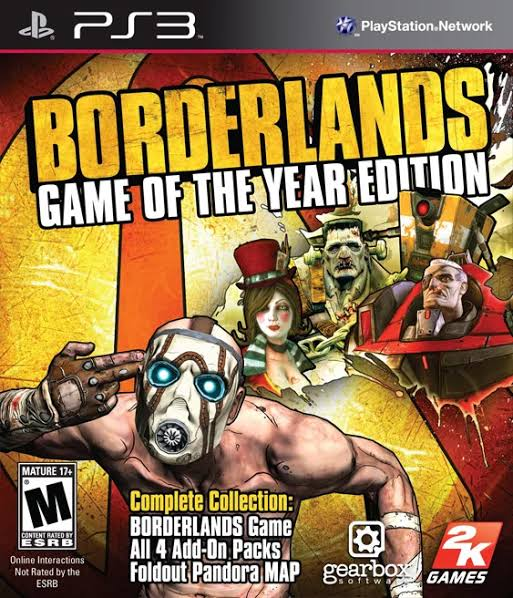
Borderlands (Inglês)
Jogo de ação/RPG para PS3. Idioma original em inglês, sem tradução ou dublagem.
Jogo Completo:DLCs:
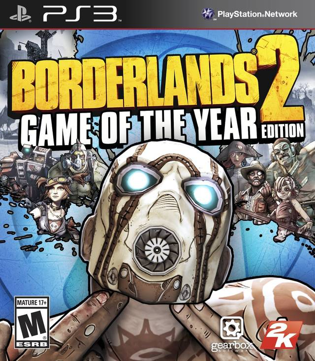
Borderlands 2 (Inglês)
Jogo de ação/RPG para PS3. Idioma original em inglês, sem tradução ou dublagem.
Formato PKG:
Call of Duty: Black Ops 2 (PT-BR)
Jogo completo dublado e legendado em português, dividido em 6 partes no formato PKG.
Arquivos do jogo:
DLCs inclusas:
Conteúdos extras com mapas e modos adicionais.

Call of Duty: Black Ops 3 (PT-BR)
Jogo completo dublado e legendado em português, dividido em 5 partes no formato PKG.
Arquivos do jogo:

Call of Duty: Ghosts (PT-BR)
Jogo completo dublado e legendado em português, em formato PKG. Dividido em 4 partes + DLCs.
Arquivos do jogo:
DLCs inclusas:
Conteúdos extras com mapas, modos e atualizações.
Call of Duty: Advanced Warfare (PT-BR)
Jogo completo dublado e legendado em português, em formato PKG. Dividido em 6 partes + DLC(opcional).
Arquivos do jogo:
DLC inclusa:
Conteúdos extras.
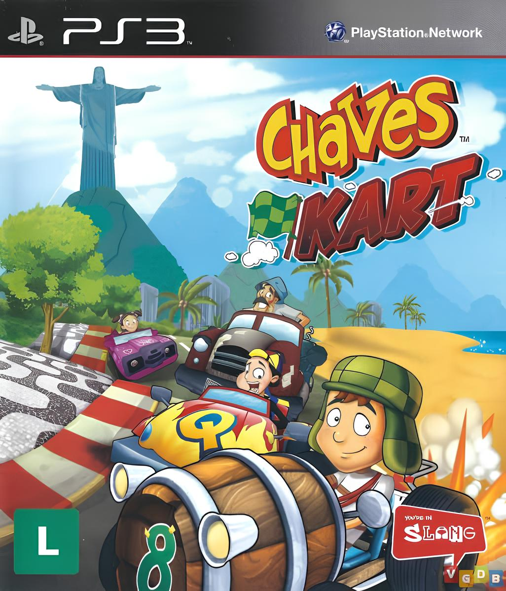
Chaves Kart (PT-BR)
Jogo dublado e legendado em português, em parte única.
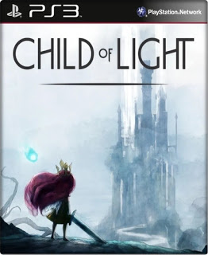
Child Of Light (PT-BR)
Jogo dublado e legendado em português, Dividido em 4 partes, mais DLC.
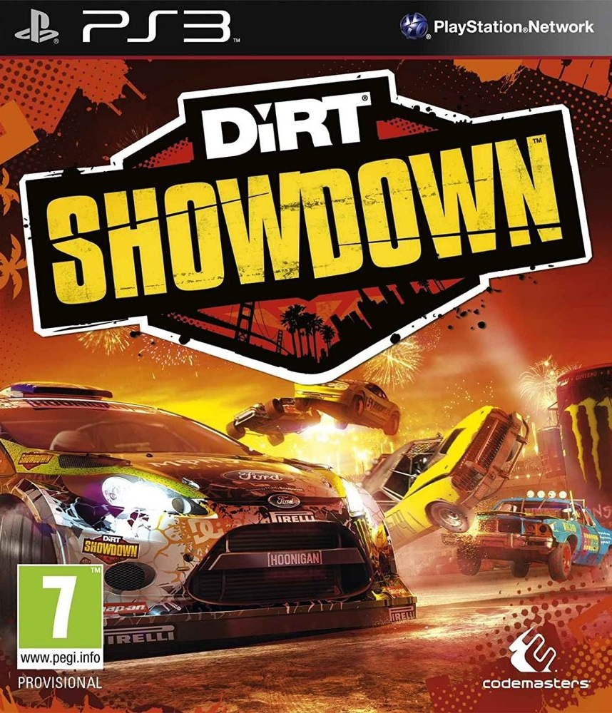
DiRT Showdown (Inglês)
Jogo em Inglês, De corrida incrivelmente bom, com online ainda funcionando.
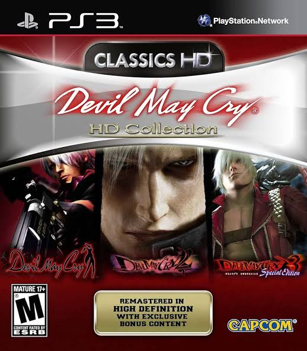
Devil May Cry HD COLLECTION (inglês)
Jogo completo Com coleção em HD, porém não recebeu uma tradução pra essa versão remasterizada. Jogo dividido em 3 partes no formato PKG.
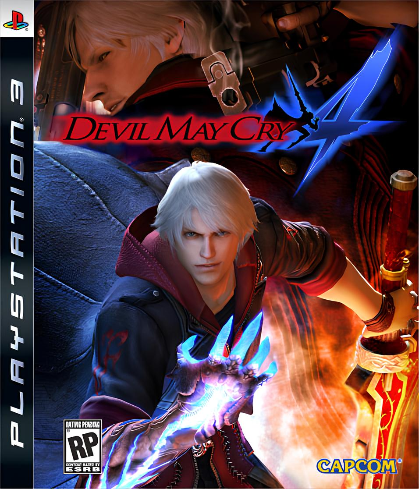
Devil May Cry 4 (PT-BR)
Jogo completo Legendado em português. Dividido em 2 partes no formato PKG.
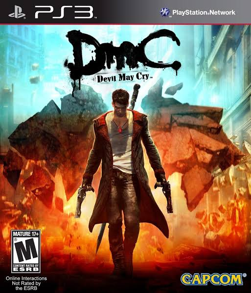
DMC: Devil May Cry (PT-BR)
Jogo completo Legendado em português. Dividido em 2 partes no formato PKG.
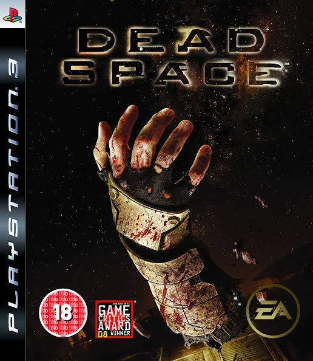
DEAD SPACE (PT-BR)
Jogo de terror e ficção científica em terceira pessoa. Em formato PKG, dividido em 2 partes. Inclui update + desbloqueio de todas as DLCs.
Após instalar as duas partes do jogo, inicie ele pelo Multiman.
Conteúdo das DLCs incluídas:
- Obsidian Pack
- Tank Pack
- Pedestrian Pack
- Heavy Damage Pack
- Speed Kills Pack
- Big Gun Pack
- Hot Rod Pack
- Astronaut Pack
- Military Pack
- Scorpion Pack
- All DLC Fix
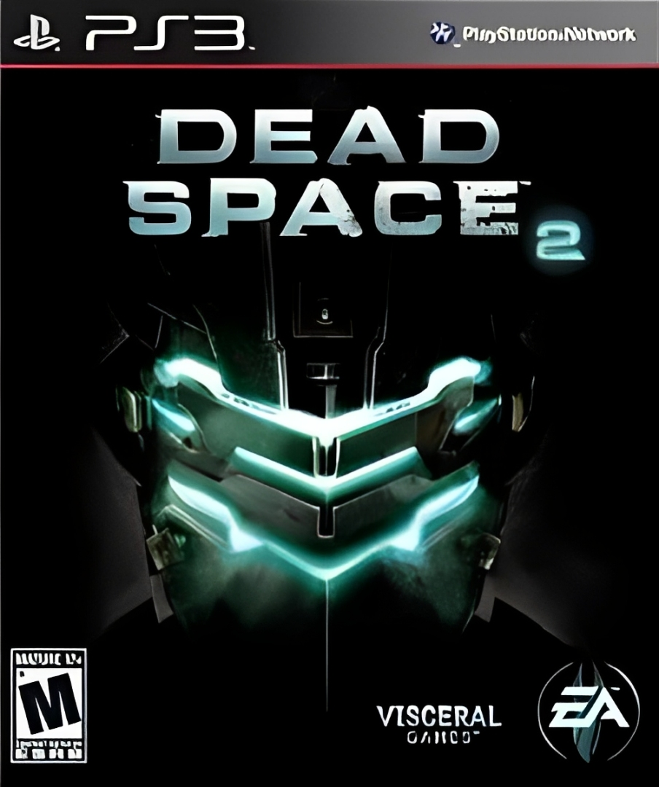
DEAD SPACE 2 (PT-BR)
Continuação direta do primeiro jogo, com gráficos aprimorados e atmosfera ainda mais intensa. Em formato PKG, dividido em 4 partes + DLC.
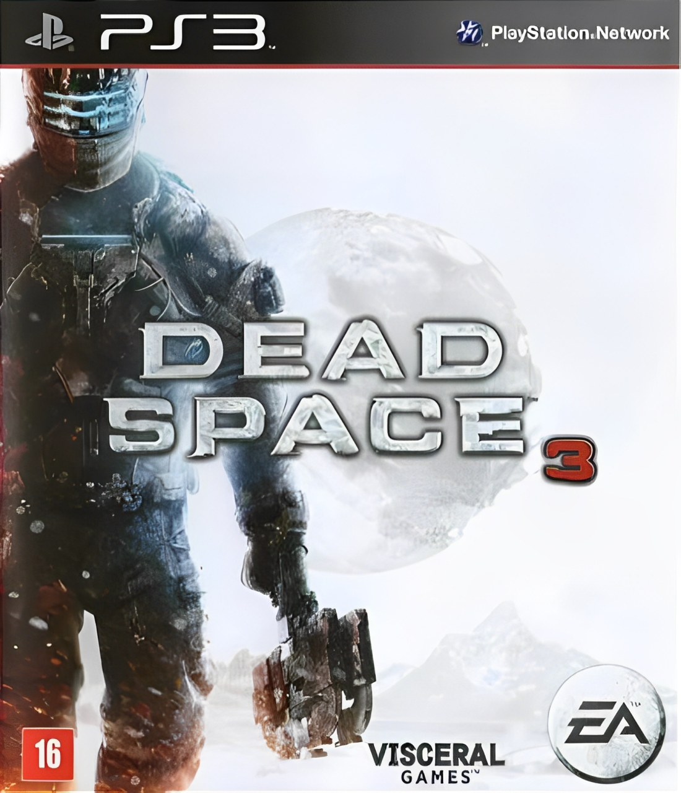
DEAD SPACE 3 (PT-BR)
O final da trilogia com modo cooperativo e novas mecânicas de criação de armas. Em formato PKG, dividido em 6 partes + DLC Awakened.

Diablo III: Reaper Of Souls (PT-BR)
Jogo completo, dublado e legendado em português, dividido em 8 partes.

Dante's Inferno (PT-BR)
Jogo completo legendado em português, dividido em 4 partes no formato PKG. Versão funcional com tradução aplicada em menus, legendas e falas principais. Não possui dublagem, mas está totalmente compreensível para quem prefere jogar em português.

Dead Rising 2 (PT-BR)
Jogo completo legendado em português, dividido em partes no formato PKG. Versão funcional com tradução aplicada em menus, legendas e falas principais. Não possui dublagem, mas está totalmente compreensível para quem prefere jogar em português.

Far Cry 3 (PT-BR)
Jogo completo, legendado em português, dividido em 2 partes. Inclui licença para ativação no jogo.

FIFA 14 (PT-BR)
Jogo completo, Dublado e legendado. Dividido em 4 partes no formato .Pkg.

FIFA 15 (PT-BR)
Jogo completo, Dublado e legendado. Dividido em 4 partes no formato .Pkg.
FIFA 18 (PT-BR)
Jogo completo dublado e legendado em português, com patch e licenças.

FIFA 19 Legacy Edition (PT-BR)
Jogo completo dublado e legendado em português com patch obrigatório incluso.

God Of War Collection HD (PT-BR)
Jogo legendado em português, dividido em 6 partes no formato .Pkg.

God Of War: Origins Collection HD Volume 2 (PT-BR)
Jogo em português, dividido em 5 partes. Inclui os dois jogos da coleção Origins.

God Of War HD (PT-BR)
Jogo dublado por IA em português, dividido em 2 partes. Está no formato splitado (.66600), então recomenda-se assistir um tutorial no YouTube para a instalação.


GOD OF WAR III (PT-BR)
Versão dublada e legendada em português do Brasil. Arquivos divididos em 13 partes.
Créditos: Tradução oficial por Big Boss. PKG convertido por Pedrost Port da Dublagem do canal: Nemesis Fandubs
Importante: A tradução aplica legendas em português. Parte 13 e fix ativa tradução e desbloqueia todas as DLCs.
GOD OF WAR III (PT-PT)
Versão dublada em português de Portugal, inclui também dublagens em inglês. Dividido em 15 partes.

Grand Theft Auto IV (PT-BR)
Jogo legendado em português, dividido em 3 partes.
Observação: A tradução pode causar travamentos nas missões "Search and Delete", "Portrait of a Killer" e "Smackdown". Se isso ocorrer, basta mudar o idioma para inglês, concluir a missão e retornar ao idioma com tradução.

Grand Theft Auto V (PT-BR)
Jogo legendado em português. Versão BLUS dividida em 5 partes no formato PKG. Também disponível a versão BLES em formato ISO. Inclui opções de MOD MENU separadas para diferentes IDs.
BLUS - Formato PKG: BLES - Formato ISO: MOD MENU:
GUITAR HERO III: Legends Of Rock (Inglês)
Jogo completo, com suporte total ao controle (joystick).

GUITAR HERO 5 (Inglês)
Jogo totalmente funcional com controle. Para ativar, vá até o menu Debug e ative a opção In Game Allow Controller. Depois disso, jogue normalmente.

GUITAR HERO: Warriors Of Rock (Inglês)
Instale as duas partes do jogo. Inicie pelo Multiman e entre no menu. Após isso, saia do jogo, instale a DLC e reinicie. O jogo estará pronto para jogar.

Heavy Rain (PT-PT)
Jogo completo em português europeu, com DLC opcional.
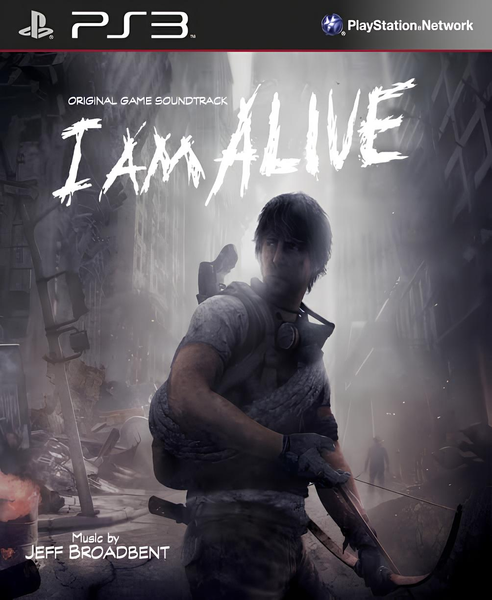
I Am Alive (PT-BR)
Jogo legendado em português. Arquivos divididos em 3 partes mais a tradução.
Arquivos do jogo: Patch de Tradução PT-BR:
ICO & SHADOW OF THE COLOSSUS HD (PT-BR)
Jogo 2 em 1 legendado em português. Inclui ICO e Shadow of the Colossus em HD.
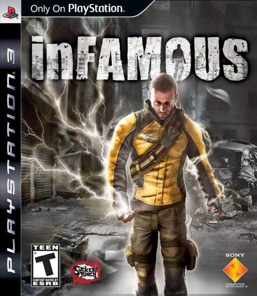
inFAMOUS (PT-PT)
Jogo completo Dublado em português europeu, Dividido em 4 Partes.
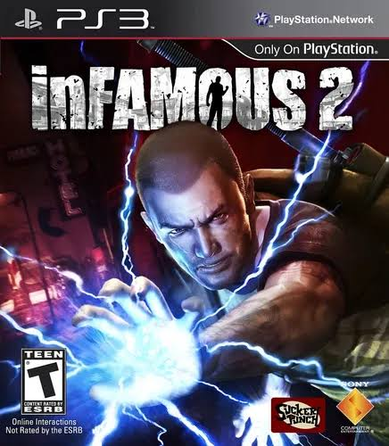
inFAMOUS 2 (PT-BR)
Sequência direta do primeiro jogo, totalmente dublada e legendada em português do Brasil.

LORD OF THE RINGS: WAR IN THE NORTH (PT-BR)
Jogo completo, Legendado em português, dividido em 4 partes no formato .Pkg.

L.A. NOIRE (PT-BR)
Jogo completo, Legendado em português, dividido em 6 partes no formato .Pkg.

Life Is Strange (PT-BR)
Jogo completo legendado em português. Contém todas as partes, licença, patch e fix dos episódios.
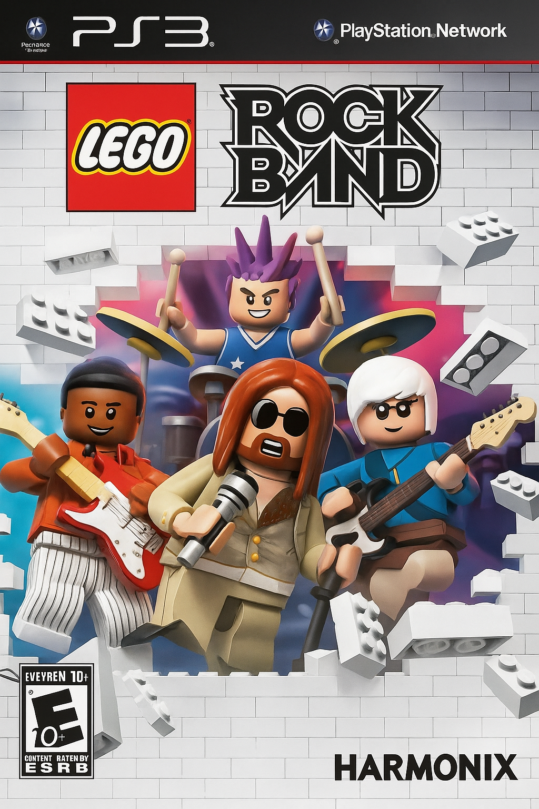
LEGO Rock Band (Inglês)
Jogo em inglês, dividido em 4 partes.
Instale na ordem: Parte 1, Parte 2, Parte 3 e Parte 4.
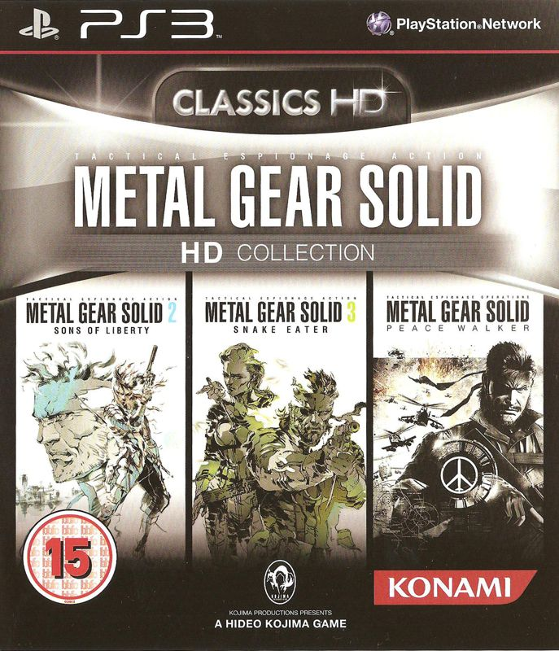
Metal Gear Solid HD Collection
Dividido em 6 partes.
Jogo completo remasterizado do PS2 diretamente para o PS3.
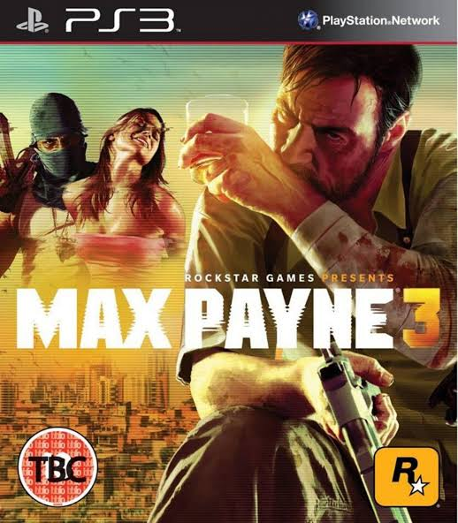
Max Payne 3 (PT-BR)
Jogo dublado e legendado em português, dividido em 5 partes + Patch e Licença.
Instale na seguinte ordem: Parte 1, Parte 2, Parte 3, Parte 4, Parte 5 (Patch) e Licença.

Minecraft - Playstation®3 Edition (PT-BR)
Jogo legendado em português, dividido em 2 partes + DLC, Licenças e Fix (Instale na ordem: Parte 1, patch, licença e fix).
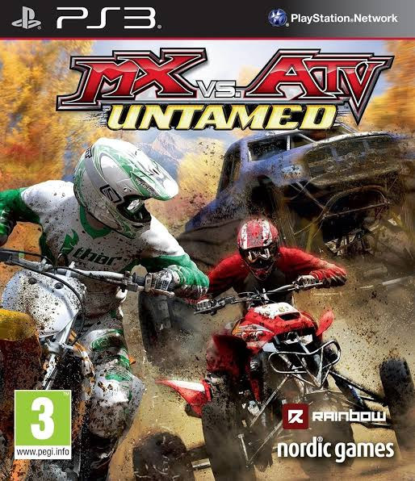
MX Vs. ATV Untamed (inglês)
Jogo completo, Em Inglês, Não possui tradução em português, pois não existem versões localizadas oficialmente ou por fãs. Dividido em 3 partes.

Mortal Kombat: Komplete Edition (PT-BR)
Jogo legendado em português, dividido em 5 partes.
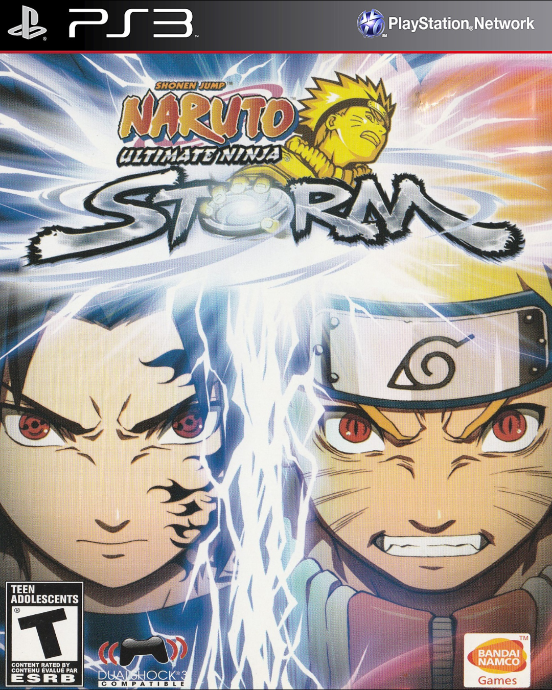
Naruto Shippuden: Ultimate Ninja Storm (Inglês)
Jogo dividido em 3 partes. Em inglês pois não ganhou atenção para uma tradução ou uma dublagem.
Naruto Shippuden: Ultimate Ninja Storm 2 (Inglês)
Jogo dividdo em 3 partes, em inglês pois não ganhou atenção para uma tradução ou uma dublagem.
Naruto Shippuden: Ultimate Ninja Storm Generations (Inglês)
Jogo completo, em inglês pois não ganhou atenção para uma tradução ou uma dublagem.
Naruto Shippuden: Ultimate Ninja Storm 3 (PT-BR)
Jogo legendado em português. Disponível em versão completa e também dividida (splitado) para quem precisa instalar via multiman
Completo: Dividido (splitado): Patch e Licença:Naruto Shippuden: Ultimate Ninja Storm Revolution (PT-BR)
Jogo legendado em português. Versão completa e dividida, Inclui DLCs com trajes e conteúdo bônus.
Completo: Dividido (splitado): DLCs e Licença:Naruto Shippuden: Ultimate Ninja Storm 4 MOD DO REVOLUTION (Inglês)
Versão modificada do Naruto Shippuuden Ultimate Ninja Storm Revolution com conteúdos do Storm 4. Idioma: Inglês. Formato PKG dividido em partes.
Download (PKG dividido em partes): Save Data: Como instalar o save data no PS3:
1. No pendrive (FAT32), crie a pasta PS3 e dentro dela a pasta SAVEDATA.
2. Extraia o arquivo .rar e coloque a pasta do jogo dentro de SAVEDATA.
3. Ejete o pendrive corretamente antes de remover para evitar erros.

PES 2015 (PT-BR)
Jogo completo, Dublado e legendado em português, dividido em 3 partes.

PES 2017 (PT-BR)
Jogo completo, Dublado e legendado em português, dividido em 4 partes.

Red Dead Redemption - GOTY (PT-BR)
Jogo completo, legendado em português, com a tradução em PKG separada.

Rock Band (Inglês)
Jogo funcional com controle. Vá em Options > Controller Settings > "Pad is", aperte X e selecione Guitar.

Rock Band 2 DELUXE (Inglês)
Para jogar no controle, vá em Menu Extras > Modifiers e ative "PAD IS GUITAR" ou "PAD IS DRUM". Instale todas as partes e o patch por último.

Rock Band 3 DELUXE (Inglês)
Para ativar a versão DELUXE, instale as 4 partes do jogo e em seguida o patch.
Resident Evil 0 HD Remaster (PT-BR)
Jogo Dublado e legendado completo, dividido em 3 partes no formato .Pkg. (Instale na ordem pra não ter problemas na instalação).

Resident Evil: Revelations 2 (PT-BR)
Jogo completo, dividido em 4 partes no formato .Pkg.

Resident Evil 4 HD (PT-BR)
Versão HD de Resident Evil 4 para PS3, disponível nas versões dublada e legendada em português.
Dublado:Legendado:
OBS: Após instalar a tradução, é necessário mudar o idioma do console ou emulador para espanhol; caso contrário, ela não funcionará corretamente.

Resident Evil 5: Gold Edition (PT-BR)
Jogo completo dublado e legendado em português. A dublagem foi feita com o uso de inteligência artificial.
Arquivos do jogo:
Skate 3 (Inglês)
Versão funcional e testada. Não possui tradução em português, pois não existem versões localizadas oficialmente ou por fãs.
Arquivos do jogo:Sleeping Dogs
Dividido em 2 partes + tradução em português.
Instale na ordem: Parte 1, Parte 2 e depois a Tradução.
Como aplicar a tradução:
1. Inicie o jogo uma vez para instalar os dados.
2. Após instalar os dados, saia do jogo e abra o Multiman.
3. Instale a tradução.
4. Se pedir para substituir os arquivos, confirme.
5. Agora o jogo está traduzido!
Importante: Após clicar em OK na mensagem de dados salvos, o menu do jogo pode demorar um pouco para aparecer, então tenha paciência!
6. Após instalar as 2 PKGs do jogo, inicie pelo Multiman ou Webman.

Silent Hill HomeComing (PT-BR)
Jogo completo legendado em português, dividido em 2 partes no formato PKG.
Arquivos do jogo:
The Last of Us + DLC (PT-BR)
Jogo completo dublado e legendado em português, dividido em 9 partes no formato PKG.
Inclui todas as DLCs originais.
Recomendado manter pelo menos 10 GB livres no celular ou mais, para enviar via ftp.
Extraia os arquivos com o ZArchive no celular, se necessário.
- 1 - Left Behind
- 2 - Abandoned Territories
- 3 - Reclaimed Territories
- 4 - Treacherous Territories
- 5 - ALL DLC FIX v5
The Evil Within (PT-BR)
Jogo de terror e sobrevivência para PS3, totalmente dublado em português, incluindo DLCs.
Jogo Completo:DLCs:
Instalação: Passe o jogo via FTP para evitar erros de dados durante a transferência.

Tom Clancy's Splinter Cell Blacklist (PT-BR)
Jogo Dublado e legendado em português, dividido em 3 partes mais a licença.
Arquivos do jogo:
The Wolf Among Us (PT-BR)
Jogo legendado em português, dividido em 2 partes. Algumas falas dos capítulos 1 a 3 podem ficar mudas, mas o restante do jogo funciona normalmente.
Arquivos do jogo:
The Walking Dead - GOTY (PT-BR)
Jogo legendado em português, dividido em 2 partes.
Arquivos do jogo:
The Walking Dead: Season 2 (PT-BR)
Jogo legendado em português, em parte única.
Arquivos do jogo:
UFC Undisputed 3 (PT-BR)
Jogo completo em português, dividido em 6 partes no formato .Pkg.
Arquivos do jogo:
Ultra Street Fighter IV. (Inglês)
Versão funcional e testada. Não possui tradução em português, pois não existem versões localizadas oficialmente ou por fãs.
Arquivos do jogo:
Watch Dogs (PT-BR)
Jogo completo, dublado e legendado em português, dividido em 4 partes + DLC com Update no formato .Pkg.
Arquivos do jogo:
Wangan Midnight (Inglês)
Jogo raro, completo e totalmente em inglês. Não possui tradução oficial ou feita por fãs.
Arquivos do jogo:Jogos PS2
Jogos de PS2 convertidos para PKG e otimizados para rodar no PS3. Muitos estão dublados ou legendados em português.
Alone in the Dark: The New Nightmare PT-BR (PKG)
Jogo dublado e legendado em português. Versão PS2 adaptada para rodar no PS3.

BLACK PT-BR (PKG)
Jogo Dublado e Legendado em português. Versão PS2 adaptada para rodar no PS3.
Ben 10: Alien Force Vilgax Attacks PT-BR (PKG)
Jogo legendado em português. Versão PS2 adaptada para rodar no PS3.
Ben 10: Ultimate Alien: Cosmic Destruction PT-BR (PS2 Adaptado)
Jogo de aventura para PS2, adaptado para rodar no PS3. Totalmente em português.
Senha para extrair: pedrost
Burnout Dominator PT-BR (PKG)
Jogo dublado/legendado em português. Versão PS2 adaptada para rodar no PS3.
Call Of Duty Classic (PT-BR)
Jogo clássico Call Of Duty adaptado para PS3, com tradução em português disponível.
PKG Completo:Tradução:
Como instalar a tradução:
1. Instale o jogo.
2. Abra o Gerenciador de Tarefas do Multiman.
3. Copie as duas pastas dentro de USRDIR da Tradução e cole em dev_hdd0/game/NPUB30065/USRDIR.
4. Entre em dev_hdd0/game/NPUB30065/USRDIR/main e apague o arquivo localized_english_pak.pk3.
5. Inicie o jogo e ele estará traduzido.
Senha para extrair: pedrost
Call of Duty 2 - Big Red One - Inglês (PKG)
Versão PS2 adaptada para rodar no PS3. Compatível com HEN e CFW. Áudio em inglês.
Call of Duty 3 - Inglês (PKG)
Jogo em Inglês. Versão PS2 adaptada para rodar no PS3.
Call of Duty World At War Final Fronts - PT-BR (PKG)
Jogo Legendado em português. Versão PS2 adaptada para rodar no PS3.
Cars - PT-BR (PKG)
Jogo Dublado e Legendado em português. Versão PS2 adaptada para rodar no PS3.
Crash Bandicoot Twisanity PT-BR (PKG)
Jogo Dublado e Legendado em português. Versão PS2 adaptada para rodar no PS3.
Crash Mind Over Mutant PT-BR (PKG)
Jogo Legendado em português. Versão PS2 adaptada para rodar no PS3.
Crash of the Titans - PT-BR (PKG)
Jogo legendado em português. Versão PS2 adaptada para rodar no PS3. Compatível com HEN e CFW.

Crash Nitro Kart - Inglês (PKG)
Jogo em Inglês. Versão PS2 adaptada para rodar no PS3. Compatível com HEN e CFW.
Crash Bandicoot The Wrath of Cortex - PT-BR (PKG)
Jogo Dublado e legendado em português. Versão PS2 adaptada para rodar no PS3.
Devil May Cry 3 PT-BR (PKG)
Jogo Dublado e legendado em português. Versão PS2 adaptada para rodar no PS3.
Downhill Domination PT-BR (PKG)
Jogo legendado em português. Versão PS2 adaptada para rodar no PS3.
Fatal Frame PT-BR (PKG)
Jogo legendado em português. Versão PS2 adaptada para rodar no PS3.
Fatal Frame III: The Tormented PT-BR (PKG)
Jogo legendado em português. Versão PS2 adaptada para rodar no PS3.
GTA San Andreas PT-BR (PKG)
Jogo legendado em português. Versão PS2 adaptada para rodar no PS3.


Guitar Hero: Brazucas PT-BR (PKG)
Jogo legendado em português, com várias músicas brasileiras. Versão PS2 adaptada para rodar no PS3.
Leisure Suit Larry Magna Cum Laude PT-BR (PKG)
Jogo Legendado em português. Versão PS2 adaptada para rodar no PS3.
Resident Evil Outbreak PT-BR (PKG)
Jogo Legendado em português. Versão PS2 adaptada para rodar no PS3.
Resident Evil Outbreak #File 2 PT-BR (PKG)
Jogo Legendado em português. Versão PS2 adaptada para rodar no PS3.
Silent Hill 2: Director's cut PT-BR (PKG)
Jogo Dublado e legendado em português. Versão PS2 adaptada para rodar no PS3.
Silent Hill 3 PT-BR (PKG)
Jogo Dublado legendado em português. Versão PS2 adaptada para rodar no PS3.
Jogos PS1
Clássicos do PS1 convertidos para PKG e prontos para rodar diretamente no seu PS3. Alguns jogos contam com tradução em português ou melhorias visuais.
Alien Resurrection Inglês (PKG)
Clássico de terror e ficção científica do PS1, convertido para PKG e pronto para rodar no PS3.
Crash Bandicoot PT-BR (PKG)
Versão convertida do clássico Crash Bandicoot, Dublado e Legendado em português e pronto para rodar no PS3.
Crash Bandicoot 2: Cortex Strikes Back - PT-BR (PKG)
Versão convertida do clássico Crash Bandicoot 2, Dublado e Legendado em português e pronto para rodar no PS3.
Crash Bandicoot 3: Warped - PT-BR (PKG)
Versão convertida do clássico Crash Bandicoot 3, Dublado e Legendado em português e pronto para rodar no PS3.
CTR - Crash Team Racing - PT-BR (PKG)
Jogo Dublado e legendado em português. Versão PS1 adaptada para rodar no PS3.